Data Structures and Algorithms
with Object-Oriented Design Patterns in C++
Data Structures and Algorithms
with Object-Oriented Design Patterns in C++
Floyd's algorithm uses the
dynamic programming method
to solve the all-pairs shortest-path problem on a dense graph.
The method makes efficient use of
an adjacency matrix to solve the problem.
Consider an edge-weighted graph  ,
where C(v,w) represents the weight on edge (v,w).
Suppose the vertices are numbered from 1 to
,
where C(v,w) represents the weight on edge (v,w).
Suppose the vertices are numbered from 1 to  .
I.e., let 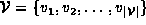.
Furthermore,
let
.
I.e., let 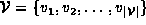.
Furthermore,
let  be the set comprised of the first k vertices in
be the set comprised of the first k vertices in  .
I.e.,
.
I.e.,  , for
, for  .
.
Let 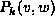 be the shortest path from vertex v to w
that passes only through vertices in  ,
if such a path exists.
I.e., the path has the form
,
if such a path exists.
I.e., the path has the form
Let  be the length of path :
be the length of path :
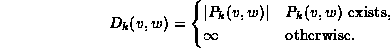
Since 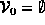, the 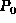 paths are correspond to the edges of G:
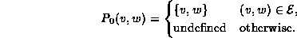
Therefore, the 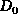 path lengths correspond to the weights on the edges of G:
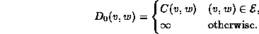
Floyd's algorithm computes the sequence of matrices
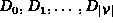.
The distances in 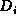 represent paths with intermediate vertices in  .
Since 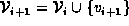,
we can obtain the distances in 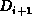 from those in
by considering only the paths that pass through vertex 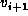.
Figure
.
Since 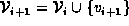,
we can obtain the distances in 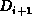 from those in
by considering only the paths that pass through vertex 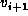.
Figure  illustrates how this is done.
illustrates how this is done.
Figure: Calculating in Floyd's Algorithm
For every pair of vertices (v,w), we compare the distance 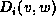, (which represents the shortest path from v to w that does not pass through ) with the sum 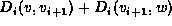 (which represents the shortest path from v to w that does pass through ). Thus, is computed as follows:
 Copyright © 1997 by Bruno R. Preiss, P.Eng. All rights reserved.
Copyright © 1997 by Bruno R. Preiss, P.Eng. All rights reserved.